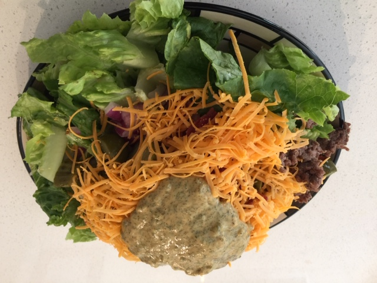

Hard to Believe It's Not a Real Burger
Cheeseburger Salad (⏰: 40 minutes)
← Back to Recipe Index 🍽

Ingredients:
Burger Meat
- 400g Extra Lean Ground Beef
- 1 Tsp Worcestershire Sauce
- 1/2 Tsp Garlic Powder
- 1/2 Tsp Onion Powder
- 1/2 Tsp Seasoning Salt
Salad Dressing
- 1/2 Cup Mayonnaise
- 4 Tbsp Ketchup
- 4 Tbsp Mustard
- 2 Tbsp Dill Relish
- 2 Tsp Dill
- 2 Tsp White Vinegar
Salad Itself
- 1 Head of Romaine/Green Leaf/Red Leaf Lettuce
- 3 Roma Tomatoes
- 1 Small Red Onion
- 8-12 Strips of Precooked Bacon
- 1 Cup Cheddar Cheese
- 4-8 Dill Pickles
Preparation:
- Cut, Wash, and Dry Lettuce
- Wash and Slice Tomatoes
- Dice Onion
- Slice Pickles
- Cut Strips of Bacon into Bite-Sized Pieces
- Shred Cheese
Directions:
- To a pan, add the beef, Worcestershire sauce, garlic powder, onion powder, and seasoning salt.
- Turn pan to medium heat and scramble fry the beef, ensuring that the added spices are mixed well into the beef. (10-15 minutes)
- In a separate pan, add the bacon. Turn to medium heat and stir occasionally. Fry until bacon reaches desired crispness.
- In a bowl, add mayonnaise, ketchup, mustard, relish, dill, and vinegar. Stir until well mixed.
- Assemble the salad on a plate or in a bowl with the lettuce, tomato, onion, pickle, bacon, beef, cheese, and dressing. Enjoy!
← Back to Recipe Index 🍽